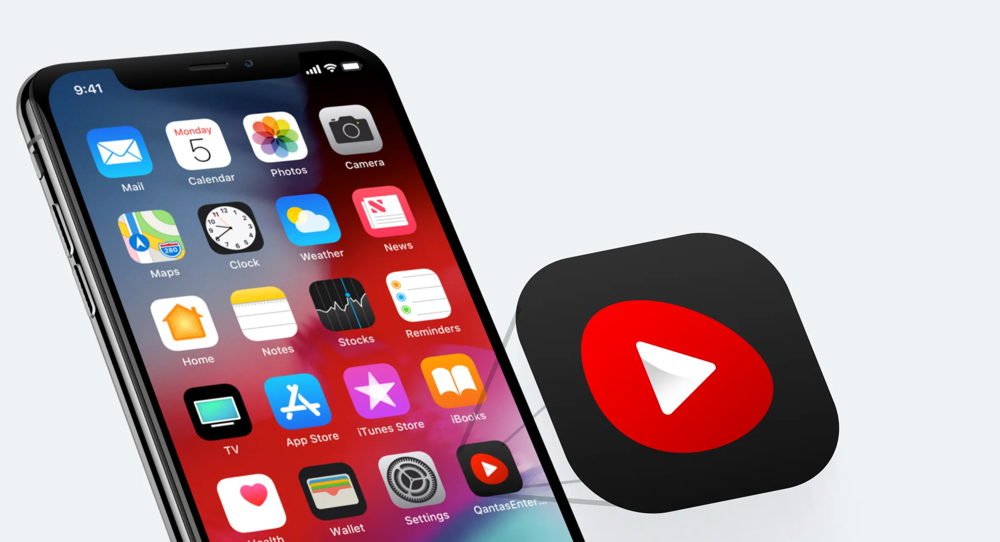

Reimagining the Entertainment Experience for Australia's Biggest Airline
Building more than just a product, a brand experience for Qantas Entertainment

 Summary
Summary
With every passenger carrying a smartphone, tablet or laptop, Qantas saw an opportunity to transform the travel experience by installing inflight Wi-Fi on some aircraft. During my time working at Qantas, I was the lead product designer on the Entertainment squad. We identified 2 hypotheses that could increase app usage.
The Work
Getting to the heart of the traveller
Having an in-depth understanding of the traveller's flight journey – pre-flight, during, and after – laid the foundations for building an effective customer experience. I held multiple workshops, conducted qualitative interviews and tested our initial assumptions via face-to-face conversations and prototypes. My desire to make the app experience as smooth and effortless as possible drove our team's design thinking, and also led to the implementation of interesting features.
The current state of the Qantas Entertainment app
The Qantas Entertainment app is used to stream entertainment to a customer's personal device, it allows the user to watch or listen to various forms of media.
A known problem was that the current app only worked when the user was on board the plane and connected to a Qantas streaming network.

The goal
Increase Entertainment app usage.
The problem
Travellers that have the Entertainment app installed on their phone don't engage with it, because the app doesn't work if not connected to the Qantas network.
Hypothesis
We predict that increasing the entertainment offering before and after the flight will increase the app usage.
Design Explorations
Workshops with stakeholders and team members.

Iteration & Testing
The winning ideas are iterated and turned into mockups for user research.

The Qantas Entertainment app icon
Redesigning the app icon was part of the process during the project, as it should be the strongest connection with the user. It is what they will see first when they land or search in the App Store.
What problems does the current app icon have?
- The image of an old TV from the 80s could imply that streaming would be slow
- The red background is the same colour as the Qantas Airways app, which could cause confusion when trying to find it in the App Store
App Icon Rationality
An app icon is expected to be a visual anchor for the product. It is a small piece of branding that, in addition to being attractive and standing out, should ideally also communicate the essence of the Qantas Entertainment (QE) app.
I created the QE app icon with 4 basic design principles in mind:
- Scalability
- Recognisability
- Consistency
- Uniqueness
Reviewing the Qantas Brand Guidelines, I discovered a branded device called "pebble shape" that would work perfectly to hold a play icon.
The New Icon
The new icon had visibility across the Qantas group and the brand manager adopted the icon as the Qantas brand for entertainment.
Designing the Details
Qantas Entertainment can retrieve data from the Qantas Airways app, like user name, flight and frequent flyer info.
The UI adapts to the entertainment type the aircraft supports
- User has no upcoming trips - show the latest 5 movies
- Aircraft only has the seatback screen
- Aircraft only has streaming services
- Aircraft has both (seat back and streaming services)
- Aircraft has neither (users only have access to Newspapers & Magazines, and exclusive offers)


Qualitative Research
The way I like to perform qualitative user testing is to start talking about their life. In a relaxing way, I ask about specific things that have happened in the past and how they solved them. After gathering an understanding of their situation, I ask them to perform a task and I watch to see how they complete it, without helping them along the way.
Continue Testing
We also ran embedded user tests, on board the plane.
Connected experience across channels
I worked closely with engineers to validate the design and copy implementations. Along with daily stand-ups, we also had weekly demos and would occasionally sit together to cross-check implementation with final designs.
- 4 rounds of user testing
- 2 rounds of design critique / Jam

Presenting iPad results during Qantas showcase
Results
Help customers to be fully prepared by guiding them on downloading the Qantas Entertainment app before they board, including informing them on what devices to bring onboard to make the most of the Entertainment & Wi-Fi on flights.
Monthly Active Users (MAU)
- Start of the project (2017) = 165k
- After redesign (~2019) = 180k • +10%
App Store Rating
- Start of the project (2017) = 2.1
- After redesign (~2019) = 4.5 • +114%
Advertising Revenue (from partners' offers)
- Start of the project (2017) = 225k
- After implementation (~2019) = 675k • +~200%
Key Learnings
Don't take simple implementations for granted
The "what's new" feature displayed the latest 5 new movies available for the user's flight. We identified huge engagement with this design pattern. There was an opportunity to add offers from Qantas partners.
Bring engineers early on to uncover blind spots on implementation
The tech review happened only after the design was approved. During the tech review, we identified that to create this service (back-end) would take ~6 months. Therefore I changed the design and created a new design pattern. I've learned to bring engineers to the design reviews early in the discovery journey.
Next Steps
Some ideas related to traveller expectations that could be explored further:
- Premium content within the app
- Flight information such as refreshment times and flight crew profiles
- What other passengers are watching on the same flight
- Onboard cabin upgrade options (during the flight)

Protecting Data Privacy
The case study shows fictitious figures, allowing the necessary contextual information to enable the evaluation of the methodologies used.